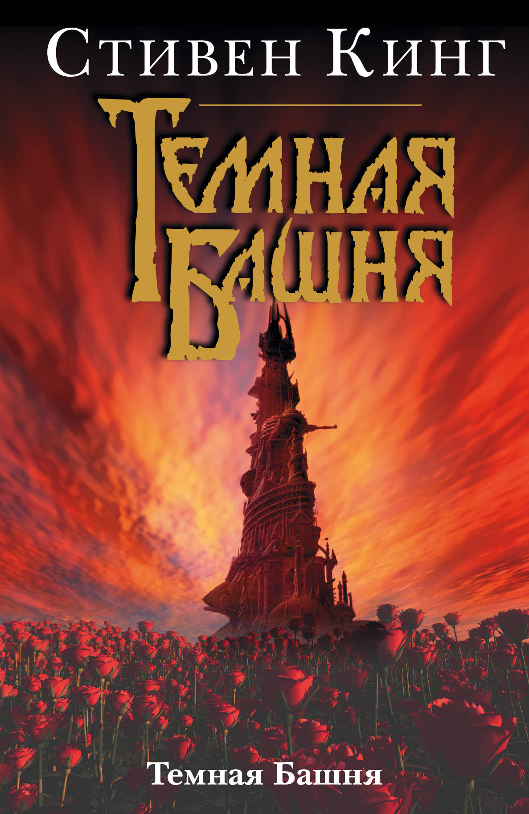
Заказать
Темная башня
| литературный вестерн, литература ужасов | |
| 1982-2004 | |
| Темная башня | |
| 16+ | |
| 4272 | |
| The Dark Tower |
О чем?
Тёмная Башня — цикл романов американского писателя Стивена Кинга, написанный на стыке фэнтези, ужасов, научной фантастики, вестерна и других жанров. Серия повествует о долгих странствиях стрелка Роланда Дискейна в поисках легендарной Тёмной Башни. Стивен Кинг называл этот цикл своим magnum opus (вершиной творчества). Цикл о Темной Башне включает в себя множество тем, персонажей и сюжетных линий из других, не связанных друг с другом книг Кинга
Книги цикла
| № | Название на русском | Оригинальные названия | Дата издания | Страницы |
| 1 | Стрелок | The Dark Tower: The Gunslinger | 1982 | 288 |
| 2 | Извлечение троих | The Dark Tower II: The Drawing of the Three | 1987 | 448 |
| 3 | Бесплодные земли | The Dark Tower III: The Waste Lands | 1991 | 608 |
| 4 | Колдун и кристалл | The Dark Tower IV: Wizard and Glass | 1997 | 704 |
| 5 | Волки Кальи | The Dark Tower V: Wolves of the Calla | 2003 | 768 |
| 6 | Песнь Сюзанны | The Dark Tower VI: Song of Susannah | 2004 | 640 |
| 7 | Тёмная башня | The Dark Tower VII: The Dark Tower | 2004 | 816 |
Кадры из фильма и комиксов по этой книге

 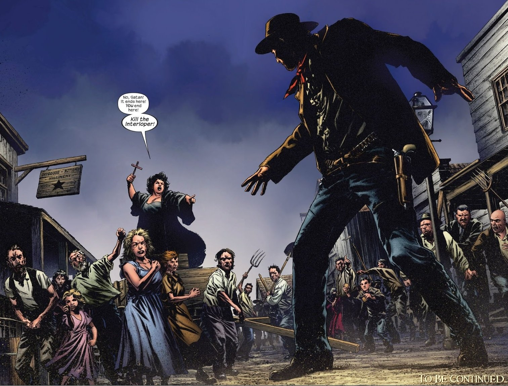
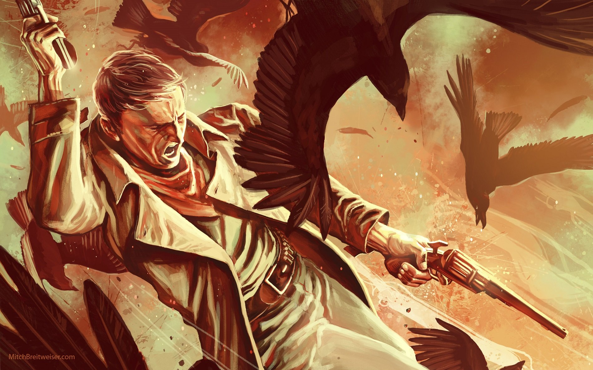
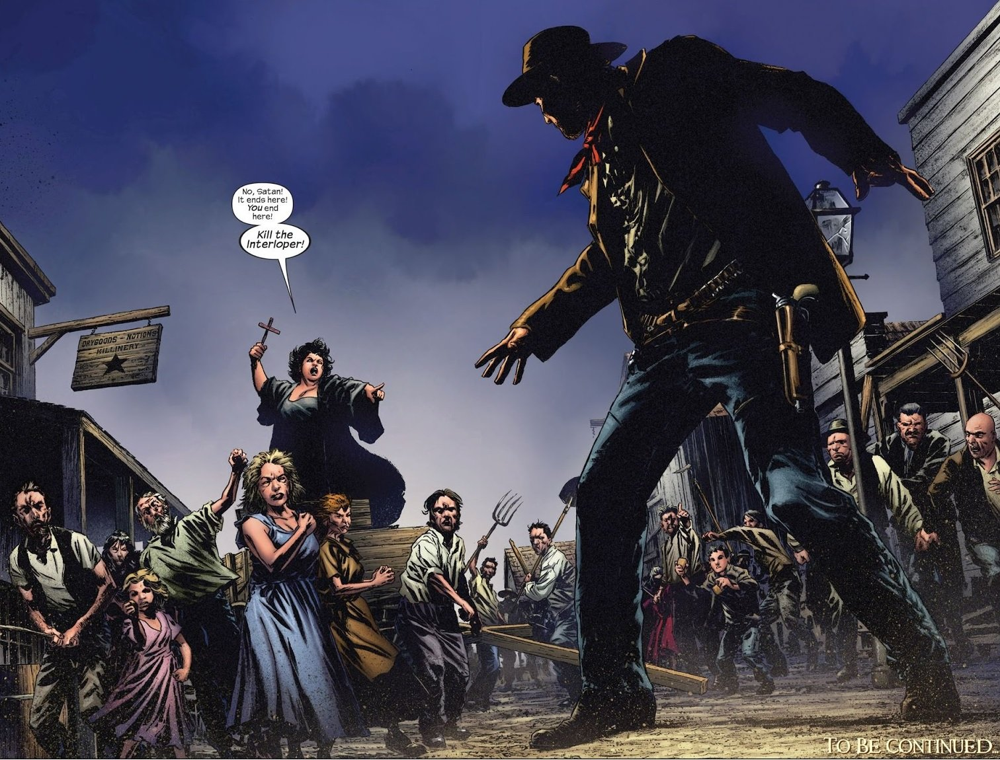
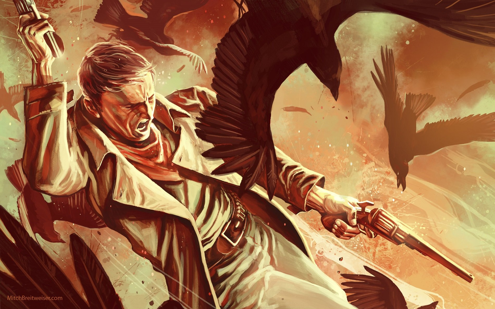
 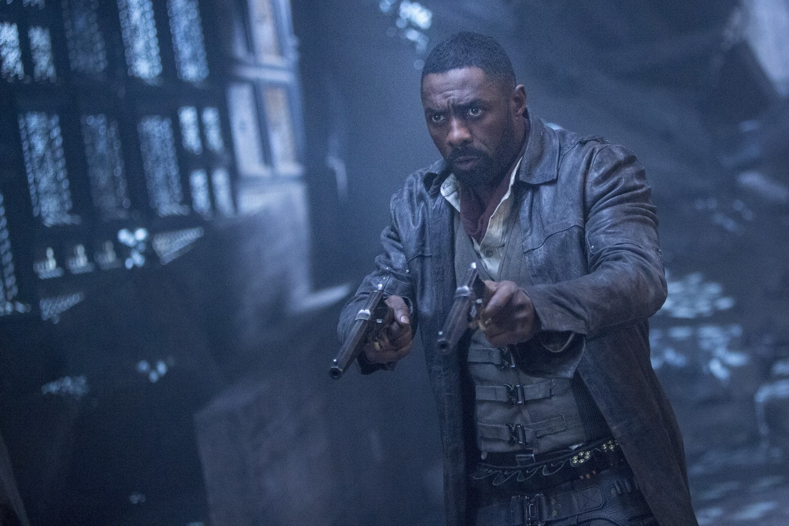
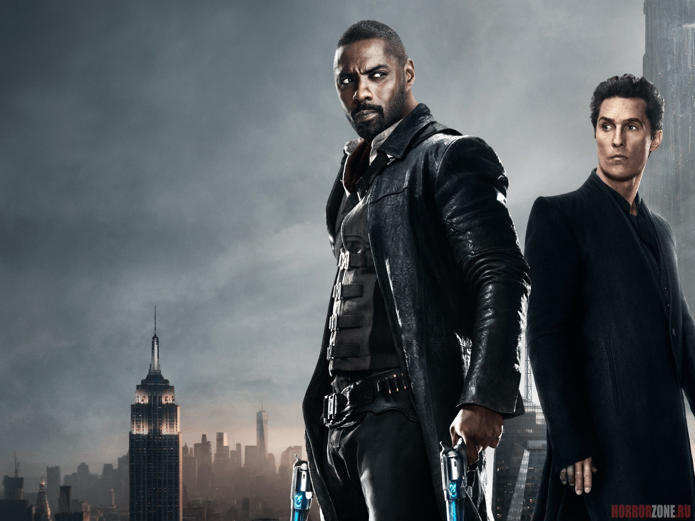
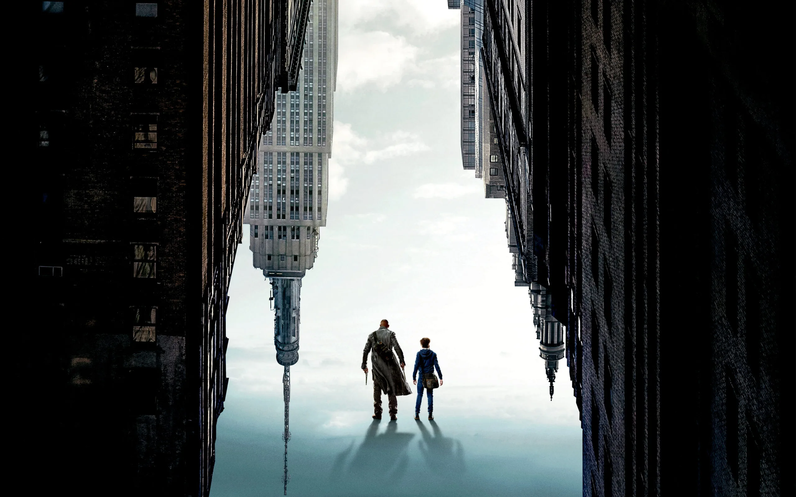
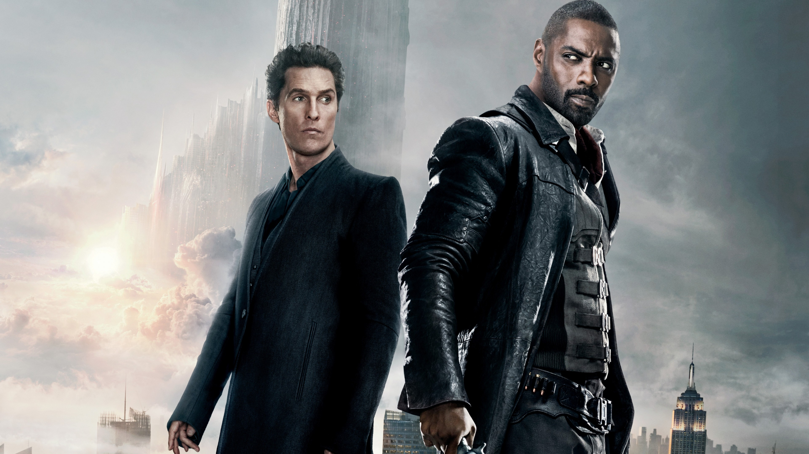
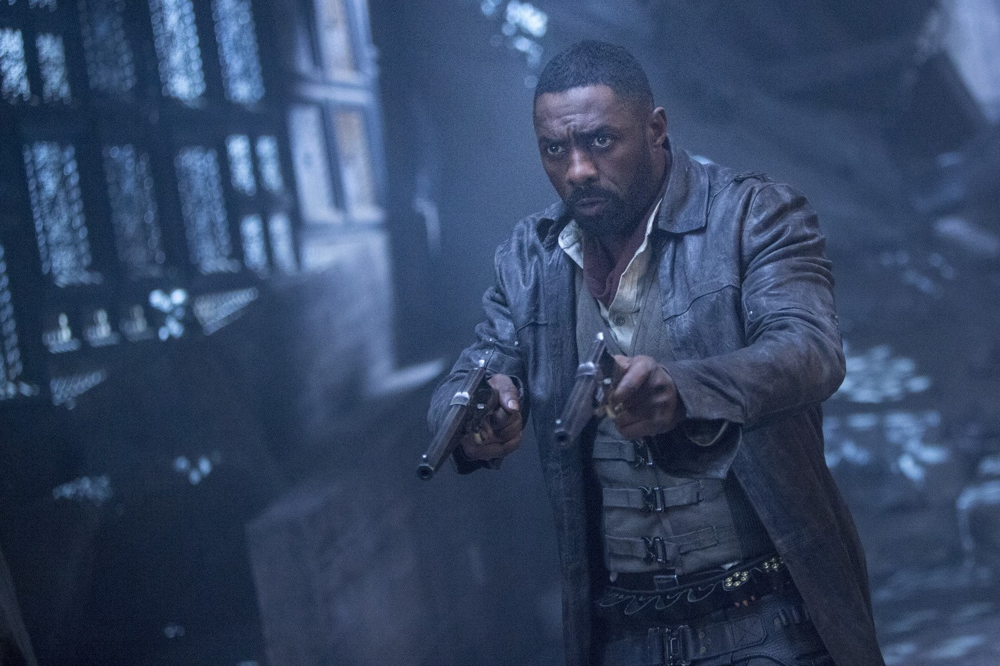
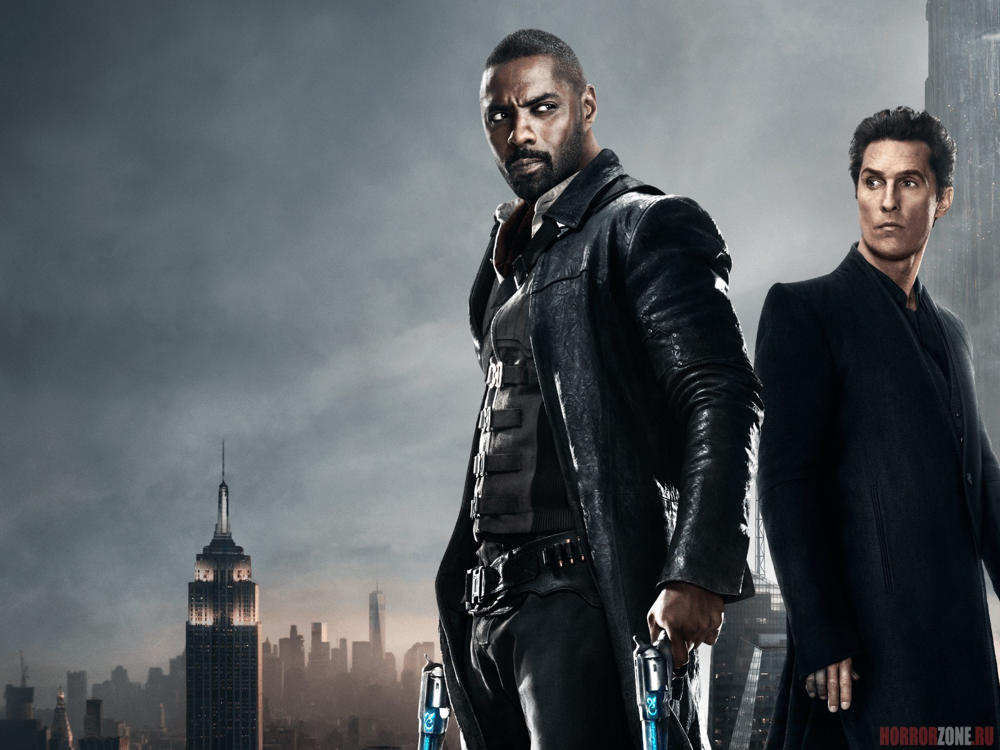
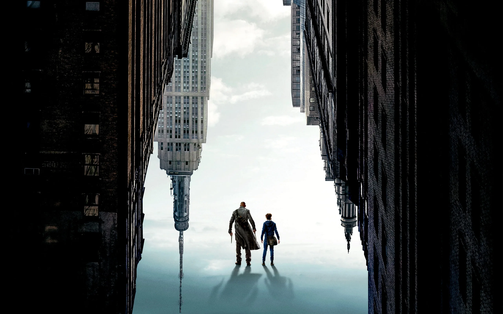
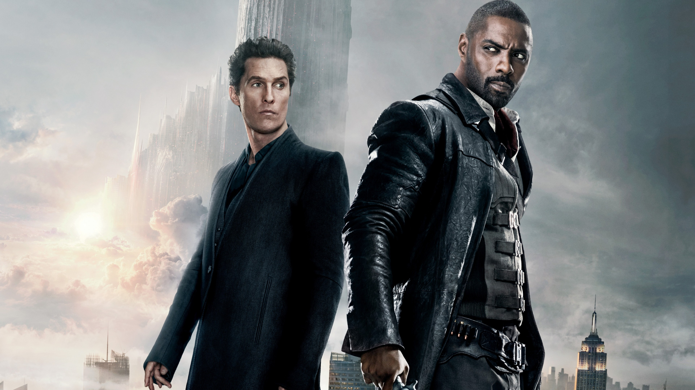
Отзывы
Пользователь: Vit_An
Дата: 16 октября 2013
Оценка: 5
Качество издания оставляет желать лучшего, в черной серии темной башни и бумага офсетная, и переплет по надежнее выглядят, правда здесь гораздо более интересные и яркие рисунки на обложках и это вызывает раздражение, потому что приходится делать выбор между книгами с плохой бумагой и оригинальными иллюстрациями, и книгами с хорошей печатью и безвкусными одинаковыми обложками
Пользователь: ozmacro
Дата: 23 декабря 2013
Оценка: 5
Книга прекрасная как и весь цикл,поэтому на качество уже не обращаешь внимание, и к тому же оно не столь плохо, всем рекомендую, особенно ценителям философской фантастики
Пользователь: oz7574145
Дата: 20 сентября 2017
Оценка: 3
Завершилось трудное и долгое путешествие к Темной Башне. Мне еще предстоит познакомиться с некоторыми книгами цикла, которые дополняют историю, но основной путь я прошла. К большому моему сожалению, я не получила ожидаемого удовольствия от приключения в целом. Каждая книга была местами увлекательна, а местами мне тяжело было пробираться через массу букв текста. Но я не сдавалась до последнего, отдаваясь во власть самых эмоциональных, наполненных тревогой, тайной, мистикой и ужасами моментов. На них и держался весь мой интерес.
От последней такой объемной книги цикла ожидала самого интересного. В плане печали и переживаний за героев, начиная ближе к середине, я получила достаточно сильные эмоции. Но полностью разочаровалась в Алом Короле и Темной Башне. Эти 2 слова, которыми был пропитан весь цикл, которые звучали так зловеще и чарующе, проявились настолько слабо в сюжете, что я совершенно не ощутила их величия. Блейн Моно, по моему мнению, в итоге остался самой пугающей фигурой. А победа над ним — сложнейшим испытанием.
Цель достигнута, Роланд и его ка-тет приложили для этого массу усилий. Иногда платили слишком дорогую цену, чтобы выполнить эту задачу. Каждый из них к концу пути твердо знал, к чему стремится, знал, что отдает. Джейк, Сюзанна, Эдди, Ыш — они постепенно менялись, приобретали лучшие черты характера, где-то в пути потеряв свои слабости. Они смогли стать чем-то целым, познали дружбу и любовь. Для меня они стали близки, за них я больше всего боялась. А вот Роланд — холодный, безэмоциональный, так и не пришелся мне по душе, хотя знакомство наше длиться гораздо дольше. Он реально человек из другого, чужого мне мира. И проблески его эмоций, переживаний так и оставили меня совершенно равнодушной.
Хочется сказать несколько слов о Мордреде. Шикарный восьминогий (семиногий) ужастик. Я с интересом наблюдала за ходом его истории, за его передвижением и усилиями выжить. Честно сказать, никогда мне не жаль было отрицательных персонажей, а вот этого монстра я пожалела. Где-то глубоко шевелилось чувство несправедливости. Так хотелось, чтобы и Мордред познал добро. Может, не все так плохо было в чудовище.
Что касается других мистических персонажей романа, мне очень понравился жуткий старикашка-актеришка и его запоминающаяся лошадка. Интересная и выгодная идея получилась и с Художником. Велики его заслуги.
Сам Стивен Кинг в роман, на мой взгляд, отлично вписался. Его история, его подсказки повлияли на события. Жаль, что не все воспоминания об этом герое «Темной Башни» будут положительные.
Еще хотелось бы сказать пару слов о концовке романа. В большей степени я ожидала другого. В какой-то момент хотелось, чтобы все закончилось. Заключение получилось не таким, я смирилась совершенно с другим исходом. Как же оказалось, что во множестве параллельных миров, все гораздо проще. Надо только найти подходящую дверь.
Добавить комментарий